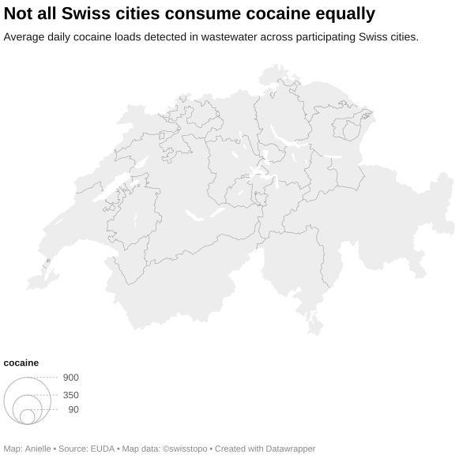
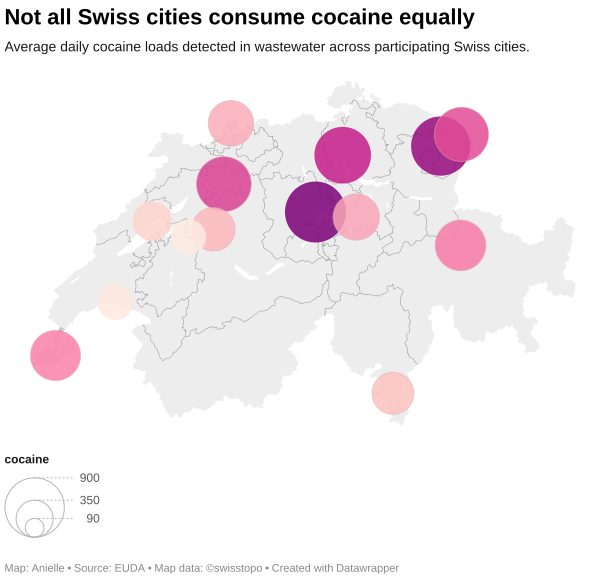

Data Analysis · Drug Policy
Swiss drug crime is falling, even as cocaine remains everywhere.
Cocaine residues remain among Europe's highest. Yet drug offences have almost halved — and the people behind them are getting older.
June 2026
Data Analysis · Drug Policy
Cocaine residues remain among Europe's highest. Yet drug offences have almost halved — and the people behind them are getting older.
June 2026
Switzerland ranks eighth out of 41 European countries for cocaine residues in wastewater — placing it alongside Belgium, the Netherlands and Spain. Researchers have flagged above-average levels in Swiss cities since at least 2014. Yet over the same period, police-recorded drug offences have fallen by nearly half.
How does a country rank among Europe's highest cocaine consumers while recording dramatically fewer drug crimes? The answer depends on which dataset you look at — and what it actually measures.
Unlike police seizures or self-reported surveys, wastewater analysis does not depend on what authorities detect or what people admit to. Scientists measure drug metabolites — the chemical traces the body excretes after processing a substance — directly in sewage systems, then normalise the results by population to compare cities and countries.
In the latest dataset from the European Union Drugs Agency, Switzerland ranks eighth out of 41 participating countries for cocaine residues.
Source: European Union Drugs Agency wastewater analysis. Figures show average daily loads of cocaine metabolites per 1,000 inhabitants.
But a single national figure flattens a more complex picture. Swiss cities do not all look alike — and cocaine is not the only substance worth examining.
The heatmap below compares residues across Swiss cities. Some rank high for cocaine; others show stronger signals for MDMA or ketamine.
Darker cells indicate higher average daily loads detected in wastewater. Source: European Union Drugs Agency.
Geographically, the pattern is consistent with the rest of Europe: cocaine signals are highest in larger urban centres.


Bubble size reflects average daily cocaine load per 1,000 inhabitants. Source: European Union Drugs Agency.
Switch from wastewater to police records, and Switzerland looks like a very different country.
According to Swiss Federal Statistical Office data, police recorded around 44,000 drug-related offences in 2025 — down from more than 85,000 in 2009. That is a drop of nearly 48 percent, sustained over more than a decade.
Police-recorded drug offences, Switzerland 2009–2025. Source: Swiss Federal Statistical Office.
The sharpest declines are in offences linked to personal possession and consumption — the categories most sensitive to enforcement priorities. That points to a shift in how Swiss authorities police drug use, not necessarily in how much drug use is happening.
The total number of offences is only part of the story. Who appears in the data has changed just as dramatically.
In 2009, people aged 20 to 24 accounted for nearly a quarter of all suspected drug offenders. By 2025, their share had dropped to around 15 percent. Over the same period, suspects aged 50 to 59 more than tripled their share — from under 2 percent to nearly 8 percent.
Share of suspected drug offenders by age group, Switzerland 2009–2025. Source: Swiss Federal Statistical Office.
Demographics alone cannot explain a shift this pronounced. More likely, it reflects a mix of changing enforcement patterns, generational differences in drug behaviour, and a gradual retreat from policing younger users.
Taken together, the data presents a clear tension: cocaine consumption indicators remain high, while the criminal justice footprint of drug use has contracted sharply. Switzerland still ranks near the top of European wastewater measurements — but fewer people are being recorded as drug offenders, and those who are tend to be older.
What the data cannot say is why. Shifting enforcement priorities, changes in how offences are classified, or a genuine generational decline in youth drug use could all be contributing. Most likely, it is some combination of all three.